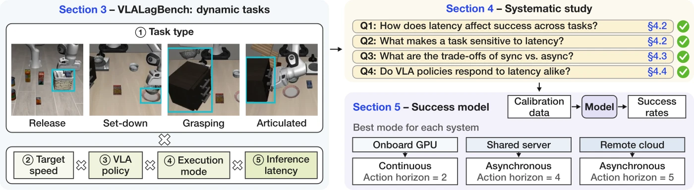
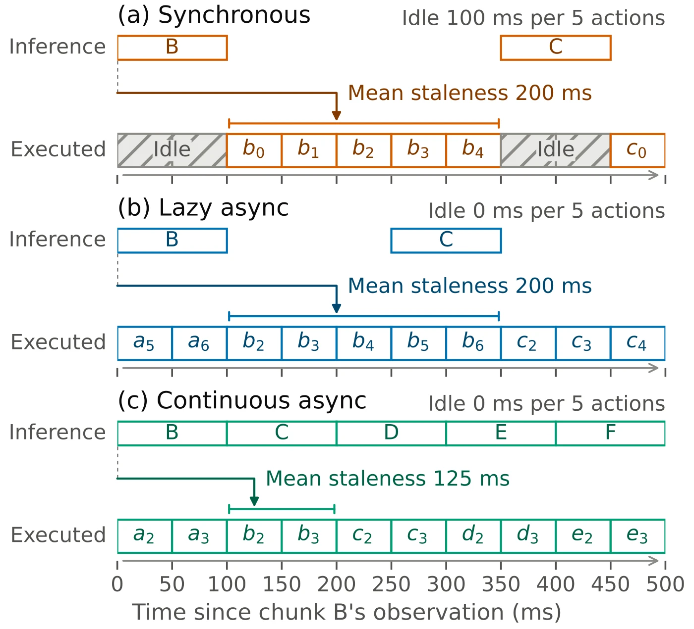
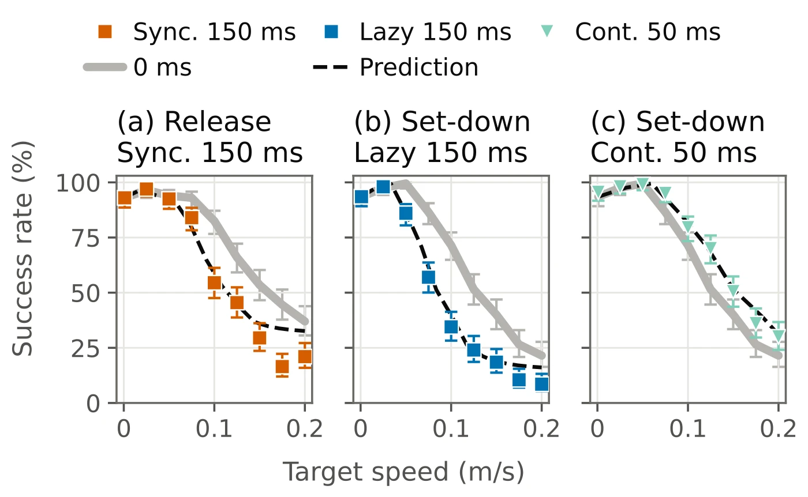

Abstract
Vision-language-action (VLA) models offer a promising path toward general-purpose robot manipulation. While inference latency can affect task success in a constantly evolving physical world, the relationship between latency and task success rate remains poorly understood. In this paper, we introduce VLALagBench, a comprehensive benchmark for studying VLA inference latency sensitivity across task types, object speeds, execution modes (synchronous and asynchronous), and VLA policies. Using VLALagBench, we find that even a modest inference latency of 100 ms can nearly halve task success on moving targets, with sensitivity varying substantially across tasks and policies. These differences reflect task-specific requirements for precision and continuous motion. By overlapping inference with action execution, asynchronous execution can recover some of the lost success at the cost of more frequent inference requests. Building on these findings, we develop an empirical model that predicts task success from limited calibration data, achieving root-mean-square prediction errors of only 5.7–7.8% across various VLA policies. Given an inference system's latency and per-robot throughput, these predictions guide the selection of system-specific VLA algorithm configurations to maximize task success. We believe VLALagBench and these findings provide a solid foundation for future robotics algorithm–system co-design.
The problem
Although VLA models need to respond in real time to keep up with changes in the physical world, the inference latency required for successful task execution remains poorly understood. From a benchmarking perspective, popular robotic manipulation benchmarks such as LIBERO and RoboCasa primarily evaluate model generalization across tasks and scenes, but their static environments provide limited insight into how inference latency affects task success in evolving physical environments. While recent benchmarks such as DynamicVLA's DOM, MoveBench, and ReflexBench support manipulation tasks with moving objects, these benchmarks do not systematically evaluate how inference latency affects task success: their evaluations either omit latency, use latencies tied to specific hardware, or cover only a limited set of policies and tasks.
VLALagBench
In this paper, we present VLALagBench, a benchmark for systematically studying how VLA inference latency affects task success, which provides the foundation for future robotic system design.

What we found
- Finding 1. Inference latency can substantially reduce task success on moving targets, with the extent of degradation depending on both the task nature and target speed.
- Finding 2. A task's latency sensitivity depends on its requirements for action precision and continuous motion.
- Finding 3. Asynchronous execution may recover task success by reducing robot pauses and observation staleness, at the cost of more frequent inference.
- Finding 4. VLA policies differ in their latency sensitivity, so the best-performing policy at a given inference latency depends on both the task and target speed.
Building on these findings, we develop an empirical model that predicts task success from limited calibration data, achieving root-mean-square prediction errors of only 5.7–7.8% across various VLA policies.
The benchmark
VLALagBench examines five factors related to latency sensitivity.
- (1) Task type: grasping a moving object, releasing an object into a moving receptacle, placing an object on a moving surface, and manipulating a moving articulated object.
- (2) Object speed: different target speeds within each task.
- (3) VLA policy: popular models including π0.5, GR00T N1.7, and MolmoAct2.
- (4) Execution mode: synchronous and various asynchronous execution methods.
- (5) Inference latency: controlled latency levels.
We compare synchronous execution with two representative asynchronous schedules: lazy and continuous execution. An execution mode governs when the robot requests a new action chunk and how it acts while waiting, creating a fundamental trade-off between robot idle time, observation staleness, and inference frequency.

We select four representative tasks that cover distinct ways a robot interacts with a moving target. Each target moves at a constant speed along a closed, nearly elliptical path that avoids collisions with background objects in LIBERO's original layouts.
Release
0.1 m/sThe robot picks up a stationary cream cheese package and drops it into a moving basket.
0 ms 82.5%
Synchronous,Sync. 100 ms 67.0%
Continuous,Cont. 100 ms 83.5%
Set-down
0.1 m/sThe robot picks up a stationary bowl and places it on a moving plate.
0 ms 71.5%
Synchronous,Sync. 100 ms 40.5%
Continuous,Cont. 100 ms 66.0%
Grasping
0.1 m/sThe robot picks up a bowl carried by a moving cabinet and places it on a stationary plate.
0 ms 86.5%
Synchronous,Sync. 100 ms 74.0%
Continuous,Cont. 100 ms 86.0%
Articulated manipulation
0.025 m/sThe robot grasps the handle of the moving cabinet's middle drawer and pulls it open.
0 ms 73.0%
Synchronous,Sync. 100 ms 61.0%
Continuous,Cont. 100 ms 74.0%
Release small
MolmoAct2 on an SO-101 arm · 0.05 m/s · 267 msSynchronous 2/5
Lazy 4/5
Continuous 5/5
Choose a mode for your system
Success model intuition. Stale observations and robot pauses caused by inference latency can make a task harder, much like increasing the target's speed. This similarity suggests a way to reuse past success measurements: we first measure how task success varies with target speed under one latency and execution mode. To estimate success under another latency and execution modes, we simply look up the success rate on the measured curve at a target speed adjusted for observation staleness and robot idle time.
For a given policy and task, we approximate success under configuration X as SX(v) ≈ S0(λXv), where S0 is the success curve under zero-latency synchronous execution with a fixed reference horizon. Configuration X specifies the inference latency, execution mode, and execution horizon. The factor λX adjusts the target speed: to predict success at speed v, we read the reference curve at speed λXv. In practice, we find that this adjustment is well approximated by a simple linear model of observation staleness and robot idle time:
where s̄X and s̄0 are the mean observation staleness under configuration X and the reference configuration, respectively; HX is the execution horizon, and IX is the number of idle steps per execution horizon. The coefficients a and b are fitted separately for each policy–task pair and quantify its sensitivity to these two factors.
Fitted on 0, 100, and 200 ms runs, the model predicts the held-out 50, 150, and 250 ms curves with an RMS error of 5.7 points for π0.5 and 7.8 points for MolmoAct2.

Different systems favor different execution modes and horizons, even for the same VLA policy and task.
| System | GPU / network | Latency (ms) | Rate limit (req/s) | Predicted Mode, H | Success (%) Pred./Meas. |
|---|---|---|---|---|---|
| A | Jetson AGX Thor | 72.8 | Uncapped | Cont., 2 | 84.5*/84.5 |
| B | RTX 4090, WiFi 7 | 37.8 | 20.0 | Cont., 1 | 92.3/95.0 |
| C | H100, 5G | 42.9 | 5.0 | Async., 4 | 84.5/82.0 |
| D | H100, slow cloud | 217.9 | Uncapped | Lazy, 5 | 46.1/41.5 |
Using measurements from System A, our model predicts the best configurations for Systems B–D. Each system favors a different execution mode and horizon. *Calibration configuration.
Also checked in Isaac Sim
To validate our findings in a second simulator, we evaluate release and grasping in Isaac Sim using the Dynamic Object Manipulation (DOM) benchmark and the accompanying DynamicVLA policy trained on moving objects. Appendix E
Citation
@misc{wen2026vlalagbenchunderstandingvlainference,
title = {{VLALagBench}: Understanding When and Why {VLA} Inference Latency Matters},
author = {Qi Wen and Borui Xu and Hussein Amro and Hongshi Tan and Hanmin Lin and
Chaoyi Ruan and Shanghao Liu and Gang Yang and Yuejiang Liu and Jiafei Duan and
Bingsheng He and Jason Clemons and Christos Kozyrakis and Wenqi Jiang},
year = {2026},
eprint = {2611.03103},
archivePrefix = {arXiv},
primaryClass = {cs.RO},
url = {https://arxiv.org/abs/2611.03103}
}